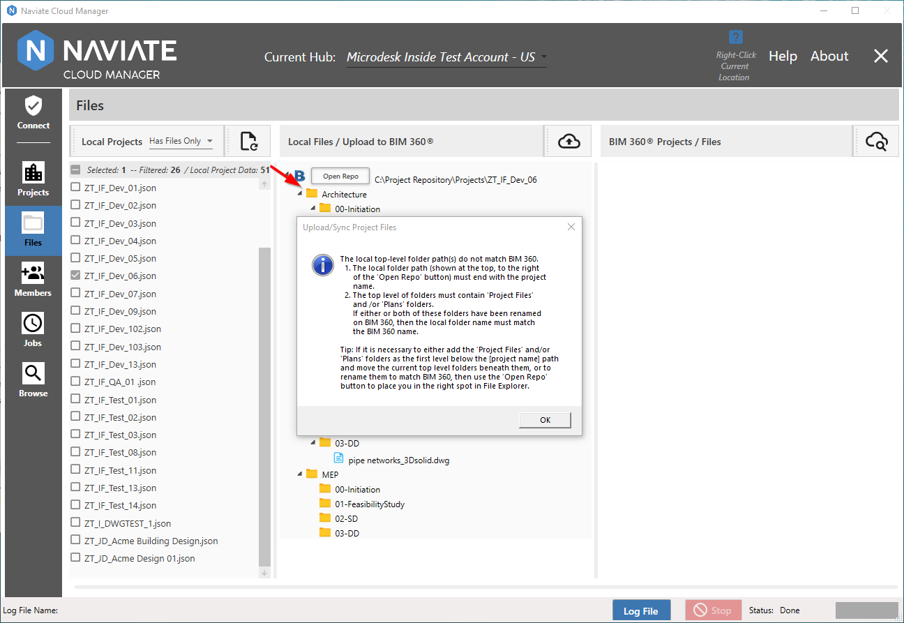
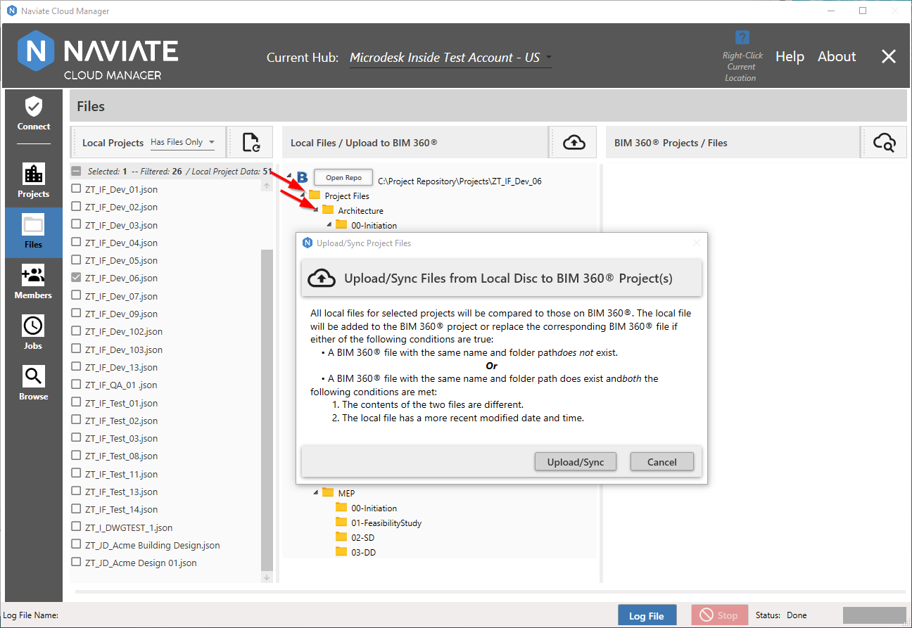
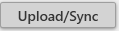
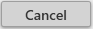
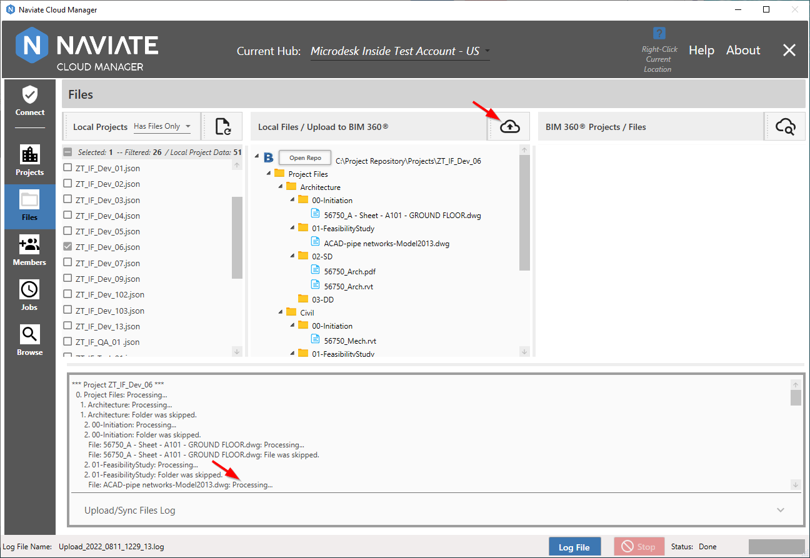
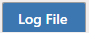
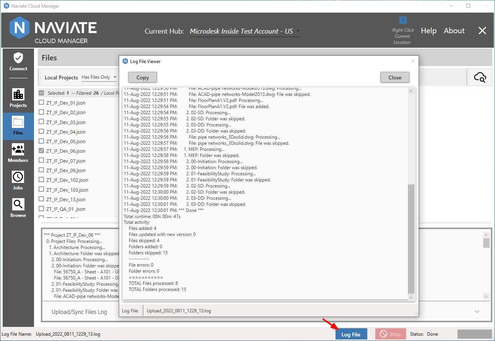

Upload/Sync the Project Folders and Files
Initiate the process of uploading the selected project files and folder structure by pressing the Upload/Sync button .
Important—As of Naviate Cloud Manager Release v2.9.0.2 it is mandatory for the first-level folder path to always be included in the local file folder path. (Previously it could be excluded and Program Files was assumed and inserted automatically.)
If the first-level folder path is not named Project Files and/or Plans the application will produce an error when attempting to upload. Renamed Project Files and Plans folders are also supported, as long as they are already in place in BIM 360® and are referenced exactly by the local folder name(s)

In this case, all that is necessary to remedy the situation is to add a Project Files folder and move the sub-folders beneath it using the MS Windows File Explorer. This can be done without even exiting Naviate Cloud Manager. After making the change, un-select then select the project again and it will recognize the new folder structure. Also, as stated in the above message box, Naviate Cloud Manager now supports uploading to the Plans folder and uploading to renamed Program Files and/or Plans folders.
Note—There may be additional steps required after uploading files to the Plans folder. If so, the user will receive an email from Autodesk® describing what files have been uploaded and providing links to perform any additional steps necessary to complete the process.
Once the validation issue has been resolved, This brings up the following confirmation dialog:

In addition to providing the ability to confirm or cancel the the upload/sync process, the dialog provides a detailed explanation of how Naviate Cloud Manager processes the Upload/Sync files. Proceed by pressing the  button or halt the process by pressing .
While the the Upload/Sync process is running, view the current progress within the log window:

Or bring up the complete log by pressing the  button:

For more information on using the log display, please refer to Status Display at the end of this chapter.
The Files Uploader utilizes the same log file naming format described above for Projects. The only difference is it substitutes the ‘Upload’ identifier for the project name.
- Upload_2022_0811_1129_13.log
- Which corresponds to:
- [‘Upload’]_[Year]_[Month:Date]_[Hour:Minute]_[Seconds:Tenth/Second]
Naviate Cloud Manager is also aware when it encounters files that are not supported for upload to Autodesk® BIM 360®, such as shortcuts (i.e., ".lnk" files). When this occurs it skips the file, indicates the action in the log, and increments the total number of files skipped by one.
Please Note—when re-running the upload for a project Naviate Cloud Manager detects new files and folders that have been added on the local file path and identifies new versions of existing files. The new folders and files are added, and the new versions are posted to the Autodesk® BIM 360® project in the cloud. Existing files, versions and folders are safely skipped.
Tip—Run the Upload process regularly against a local project working directory to keep BIM 360® in sync with local project files and folders.